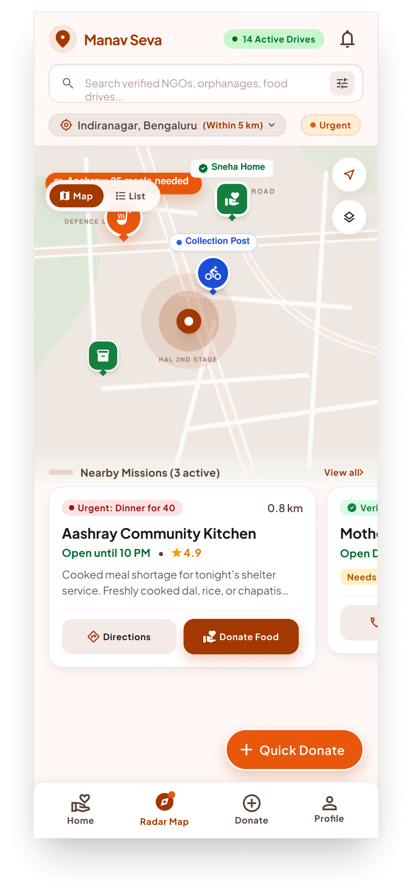

DONOR - NGO MOBILE PLATFORM · 2025
ManavSeva.
A calm mobile system for donors, NGOs, volunteers, and beneficiaries to see giving become visible, trackable impact.

DONOR - NGO MOBILE PLATFORM · 2025
A calm mobile system for donors, NGOs, volunteers, and beneficiaries to see giving become visible, trackable impact.
